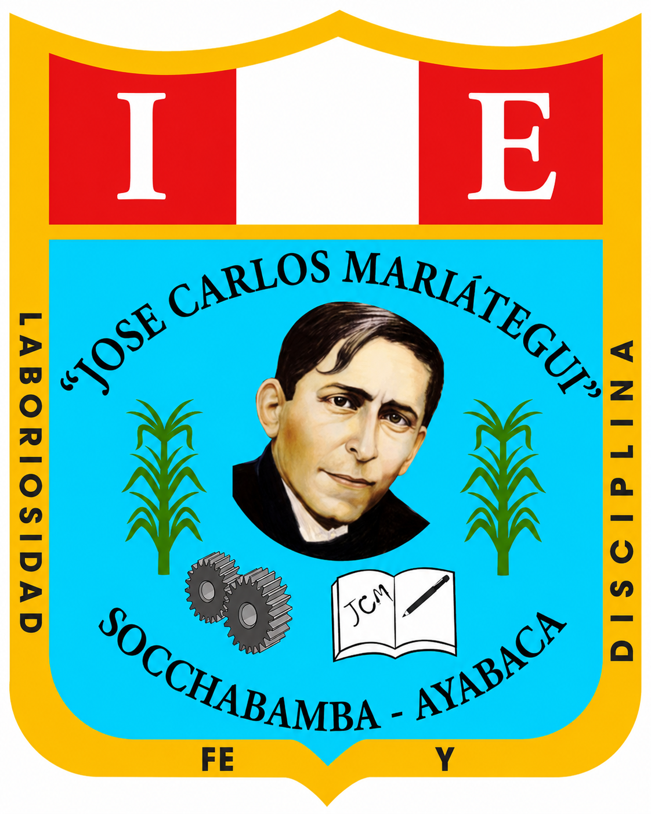

YACHAYlaboratorio de palabrasCOMUNICACIÓN · RAZONAMIENTO VERBAL
Conecta las ideas.
Descubre la relación.
Entrena tu mirada para encontrar lo que une a dos palabras. Sin prisa, con curiosidad y a tu propio ritmo.
2 desafíos disponibles3 niveles
01 / listo para empezar
¿Cómo te llamas?
Elige un recorrido y tu nombre aparecerá en el resultado final.
Selecciona un desafío para continuar.
SEGUIMIENTO
Historial de resultados
| Estudiante | Desafío | Aciertos | Errores | Nivel | Fecha |
|---|